You do not need to read everything in order. Expand a topic in the contents or choose a topic card below. Each chapter first explains its features, then walks you through using them.
All accounts and aquarium data shown are fictional. Example illustrations are for demonstration only. The menus available depend on your permissions and server setup. Tap an image to enlarge it.
Screenshots show the German interface. In the app, you can switch between German and English. Button names in these instructions are given in English.
Area 1
Getting started
Sign in, find your way around and begin with your first tank.
Chapter 01
Your first tank in a few steps
Ready to get started? This short route covers the essentials. The other chapters explain each feature in more detail.
What you can do here
- Tank
- All records belonging to one tank are kept together here.
- Readings and log
- Readings record values; the log records completed work.
- Add more later
- You can use photos, sharing, AI and Social later as needed.
Step by step
- Sign in and create your first tank with a name, water type and size.
- Add animals and plants from the catalogs. Deliberately choose any relevant forms or L-numbers.
- Open “New measurement”, choose your test methods and save your first readings.
- Record the next care task in the log. Then set a suitable measurement cycle.
- Open your profile for language, appearance and test usage. For offline use, first wait for the initial online synchronization to finish.
Chapter 02
Sign in and get started
You need the address of your aquarium app and a user account. You can read this guide without signing in.
What you can do here
- Sign in
- Your account opens your own tanks and tanks shared with you. Use the same account on each visit.
- Register and verify email
- Registration creates an account. Email verification confirms that the address belongs to you.
- Invitation or external sign-in
- An invitation allows registration on restricted servers. Pocket ID is an alternative sign-in method configured by the operator.

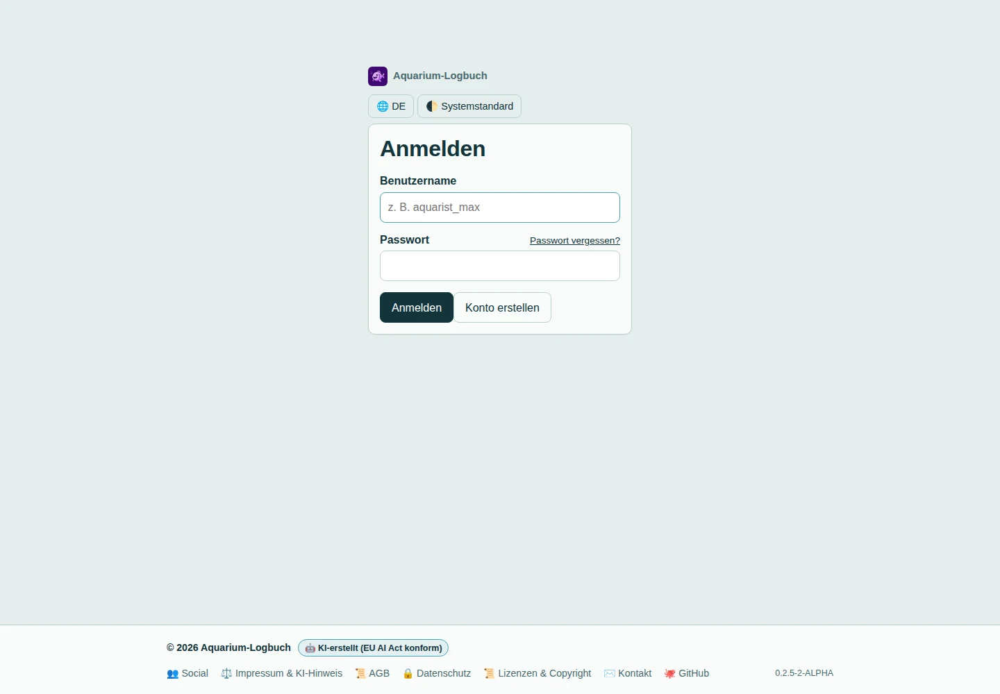
Step by step
- Open your app address in a browser. Sign in with your username or email address and password.
- No account yet? Choose “Register” if registration is enabled. Enter the required information, then read and accept the terms of use.
- Confirm your email address using the link you receive. If no message arrives, check your spam folder and ask the operator to check email delivery.
- If you have an invitation, open its link first or enter the invitation code during registration.
- If your operator has configured Pocket ID or another OpenID Connect provider, you can use the external sign-in option.
Chapter 03
Your overview
After signing in, you see your aquariums. Click the logo at the top left to return here at any time.
What you can do here
- Tank cards
- Each card represents a tank. Tap it to open its readings, residents and care records.
- Owned and shared tanks
- You manage your own tanks. A shared tank’s permission determines whether you can only read or also change records.
- Language and appearance
- The header lets you switch between German and English and between light, dark and system appearance.

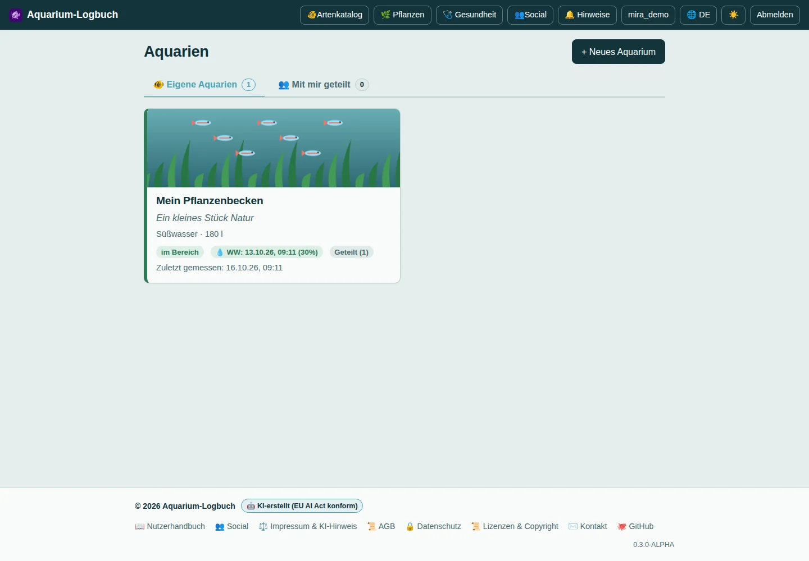
Step by step
- “My aquariums” shows tanks you own. “Shared with me” contains aquariums whose sharing invitations you have accepted.
- Open an aquarium by selecting its card. You will find current readings, warnings, care cycles and the other sections there.
- The header links to species, plants, health, Social, notifications and your profile.
- Use the language button to switch between German and English. The theme button selects a light, dark or system theme.
- When online, the app synchronizes data with the server automatically. The local data timestamp and “Synchronize now” appear only offline. They disappear when the server is reachable again. Pending changes and errors remain visible for review.
Area 2
Tanks, readings and care
Manage tanks, test the water and record completed work.
Chapter 04
Create or edit an aquarium
An aquarium keeps measurements, animals, plants, photos and care activities together.
What you can do here
- Name, water type and size
- These fields describe your tank. Water type and size help put readings and animal care into context.
- Description and cover image
- A motto, text and photo make multiple tanks easier to distinguish. They do not replace readings or care records.
- Edit and delete
- Editing corrects tank details. Deleting removes the tank and its associated records and requires deliberate confirmation.

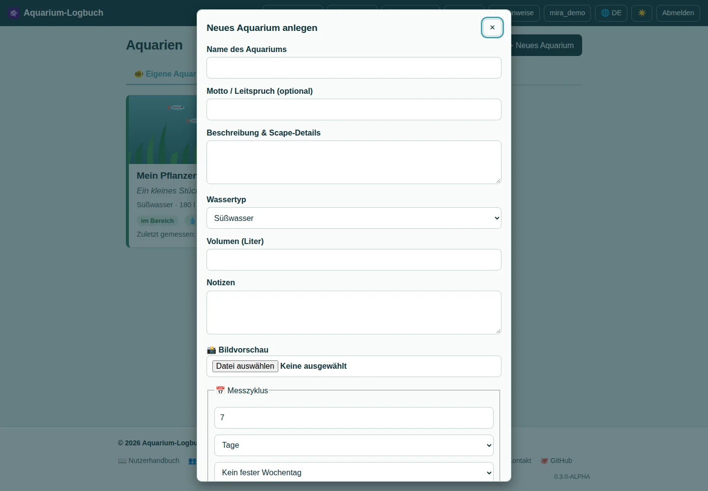
Step by step
- Choose “+ New aquarium” in the overview. Enter a name that helps you recognize the tank.
- Choose freshwater or saltwater and enter its volume in liters. Add a motto, description and notes if needed.
- Check the details and save the aquarium. It will appear in your overview.
- To make changes, open the aquarium and choose “Edit”. You can also adjust care cycles using “Configure cycles” in the tank view.
- Only delete an aquarium when you no longer need its data. Read the confirmation and export or back up important data first.
Chapter 05
Remember the next water test
The measurement cycle shows when you plan to check the water again. It does not take readings automatically.
What you can do here
- Interval
- This sets how often you want to test, for example every seven days.
- Due or overdue
- The status compares the planned date with the current time.
- Plan doses separately
- Fertilizers have their own plans in the fertilizer area. A measurement cycle is not a dosing plan.

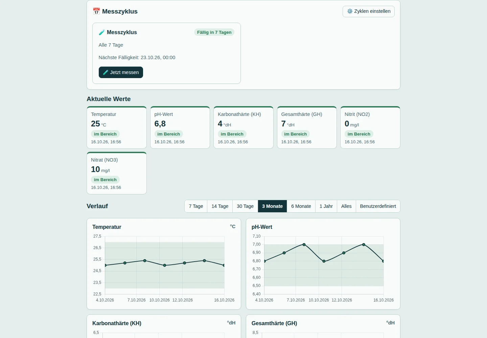
Step by step
- Open the tank and choose “Configure cycles” beside the measurement cycle.
- Choose an interval in days or weeks. Select a weekday where offered. An interval of zero disables the cycle.
- Enable an email reminder if needed, then save. This requires a verified address and working email delivery.
- Read the next due date on the cycle card. “Measure now” opens the usual measurement form.
- Save a test you actually performed. Check the updated due date and change the cycle if your routine changes.
Chapter 06
Measure and save water parameters
You can record individual readings or a complete set. Empty fields are not saved as measurements.
What you can do here
- Choose a test method
- Choose the test you actually use. The selection determines the timers offered and which test inventory receives the usage.
- Start a timer
- A timer reminds you of a test’s reaction time. It does not perform the test or enter its result. The additional Active timers FAB appears only while timers are running. Expand it to see remaining times grouped by tank, stop a timer or open its test. Open tests and Active timers collapse each other.
- Save readings and time
- Only completed values are saved. An earlier timestamp is useful when recording a test you performed before opening the app.
- Pause tests for each aquarium
- Values, test selection, measurement time with its original time zone, notes and timer deadlines are stored locally for each account and aquarium and synced with your other devices when connected. The expandable “Open tests” button lists these drafts. “Pause test” returns to the overview; reloading and closing preserve drafts already saved locally. Signing out hides them; signing in again with the same account restores them. “Save measurement” creates the measurement and closes its draft together; “Discard test” removes the draft after confirmation on all devices once synced.

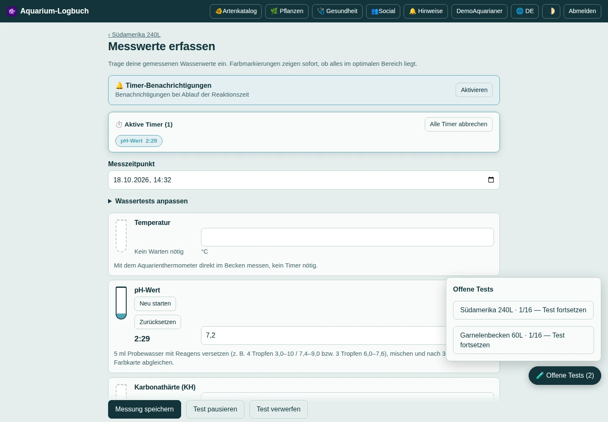
Step by step
- Open your aquarium and choose “New measurement” or “Measure now”. Check the measurement time.
- Open “Customize water tests” and select the tests you actually use. You can combine methods from different manufacturers.
- “Apply suite” replaces your selection with that test suite. “Add suite” extends it; one method remains selected for each water parameter.
- Follow the instructions supplied with your water test. Start the timer next to a parameter if needed. Several timers can run at the same time.
- Enter the result you read. A decimal comma is accepted. The color indicator helps you interpret the value.
- Choose “Pause test” to return to the overview and measure at the next aquarium. Expand “Open tests” at the bottom right and select an aquarium to resume. Starting another test for the same aquarium asks whether you want to return to its open test.
- To switch devices, wait for pending changes to sync while connected and sign in with the same account on the other device. Open “Open tests” there. Offline you can continue previously downloaded drafts; let local saving finish before closing the app.
- If differing entries are reported, expand the local changes and choose “This device” or “Other device” for each affected field. Select “Apply selected values”; equal values and independent additions need no decision.
- Add a note if needed and choose “Save measurement”. The reading appears in the aquarium history and logbook.
Chapter 07
Set up and calibrate a YINMIK meter
Electronic meters need appropriate preparation. The wizard guides you through the selected model; you perform every action on the actual meter yourself.
What you can do here
- Model-specific steps
- Seven meter families are available as test suites. The wizard shows procedures for the selected parameters and identifies button sequences missing from public sources.
- Before each use
- The short procedure covers samples, stable readings, units and cleaning. A completed checklist is not a calibration certificate. In an active test, Calibrate meter saves locally, pauses the form and reopens it afterwards. Completing the full procedure shows “You did it!” with confetti; reduced motion keeps the message without animation.
- Read offline
- After a complete online sync, guides and the wizard are available offline. Manufacturer links require internet. Readings are entered manually.

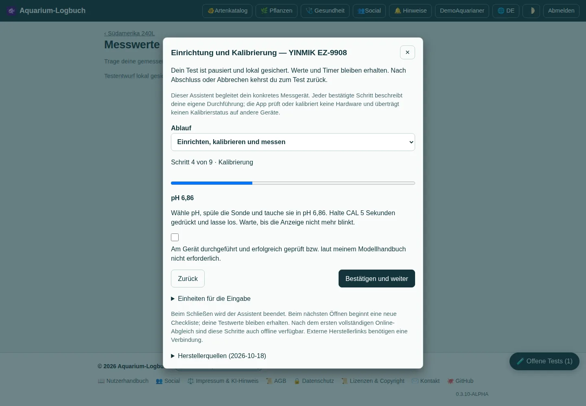
Step by step
- Open test selection in your profile or under New measurement. Choose the exact YINMIK model and add individual parameters or the entire suite.
- The wizard opens. Compare model, buttons and probe with the supplied manual; stop if they differ. Prepare the specified standards and clean containers.
- Perform each step on the meter. Confirm it only after a successful check; use the exact model manual for missing button instructions. Back lets you review previous steps.
- After calibration, check a fresh portion of the standard. Wait for stable sample readings and observe entry units; for example, 3.5% salinity equals 35 ppt.
- Close the wizard and enter readings. In an active test, choose Calibrate meter directly on a measurement card. The test is saved locally and paused. After the last confirmed step, confetti and “You did it!” appear. The test automatically reopens after this brief celebration; cancelling also returns without losing readings, notes or running timers. The meter button in test selection also opens the wizard.
Chapter 08
Understand charts, tables and warnings
Current readings appear near the top of the aquarium. The history shows how your water changes over time.
What you can do here
- Latest readings
- The tank shows the latest available reading for each parameter. Check its date: an old reading may not describe today’s conditions.
- Charts and target ranges
- The line shows changes over time. Highlighted ranges help compare readings with stored limits; they do not explain the cause of a deviation.
- Table and warnings
- The table shows individual readings and notes. A warning highlights a deviation; acknowledging it only records that you have seen it.

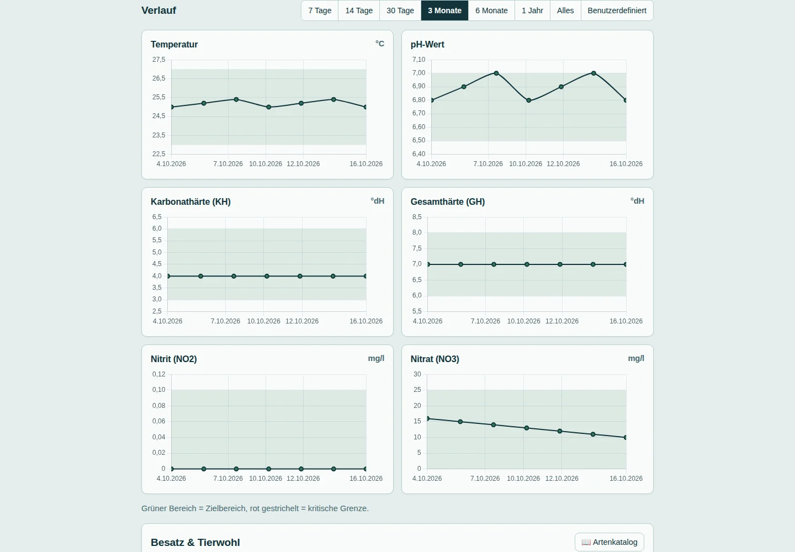
Step by step
- Scroll to “History” in the aquarium. Choose a range such as seven days, three months, one year or all time.
- For your own date range, choose “Custom” and set the start and end dates.
- Compare the curve with the target range and marked critical limits. A single reading does not explain what caused a deviation.
- The measurement table lists dates, values and notes. More rows load when needed.
- Warnings appear in the aquarium and under “Notifications”. Check the reading and the conditions in your tank before acknowledging a warning.
- With sufficient permission, you can delete an incorrectly recorded measurement. This does not restore the water test already consumed.
Chapter 09
Record care in the logbook
Use the logbook to record work on your tank. Measurements appear there too.
What you can do here
- Record care work
- A log entry records work such as filter care, feeding or pruning. This helps explain later changes.
- Water change percentage
- The percentage describes how much water you replaced. In a 100-litre tank, 30 percent is about 30 litres.
- Filter and correct activities
- The combined timeline distinguishes care work from readings. With write permission, you can edit or delete incorrect care entries.

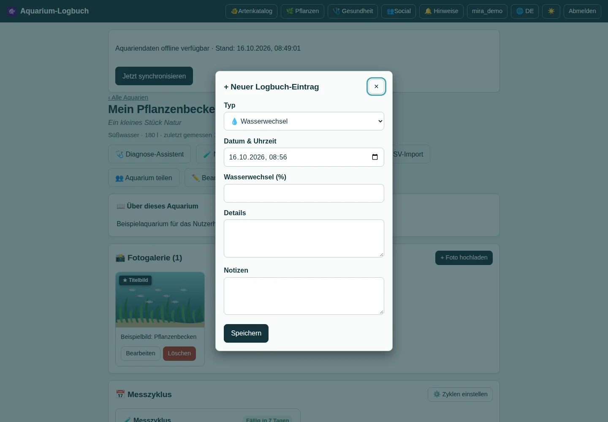
Step by step
- Choose “New logbook entry” in the aquarium. Set the time and type of work.
- For water changes, enter the percentage of water replaced. Describe other work in the appropriate fields.
- You can document water changes, filter maintenance, plant trimming, new plants, cleaning, fertilization, feeding and other activities.
- Save the entry. In “Aquarium logbook & activities”, filter by activity type or load older entries.
- You can edit or delete care entries in your own aquariums or tanks shared with the appropriate permission.
Chapter 10
Manage fertilizers and dosing plans
The app records fertilization and reminds you of planned work. It does not control a physical dosing pump.
What you can do here
- Manual fertilizer
- The plan reminds you when to dose. Confirm only after adding the fertilizer; confirmation creates the corresponding log entry.
- Dosing pump plan
- An automatic plan records scheduled doses. The app does not operate or monitor a physical pump.
- Amount, interval and pause
- Millilitres specify the dose and the interval specifies how often it occurs. Pausing stops future plan actions without deleting the history.

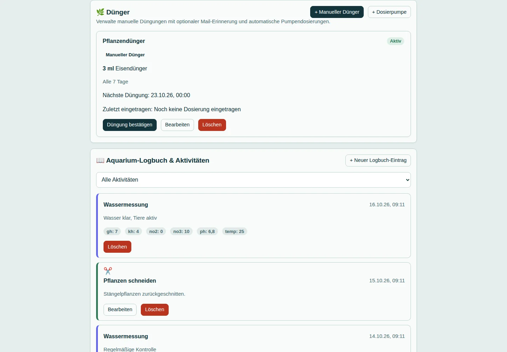
Step by step
- Scroll to “Fertilizers” in the aquarium. Choose “+ Manual fertilizer” or “+ Dosing pump”.
- Enter a clear name, the fertilizer, the amount in milliliters and the interval. Fill in the available time and reminder options.
- For a manual fertilizer, confirm a dose you have actually administered using the provided button. This creates a logbook entry.
- For automatic pump schedules, the app records due doses according to the plan. Check your physical pump independently.
- Edit or pause a plan when your fertilization changes. Removing a plan leaves existing logbook entries intact.
Chapter 11
Photos and gallery
Gallery photos belong to your aquarium. They are not automatically published in the public Social feed.
What you can do here
- Gallery and cover image
- The gallery collects photos for a tank. A cover image helps you recognize that tank.
- Resident photo and avatar
- A resident photo belongs to an animal or group. Your avatar belongs to your user profile. Each has its own upload field.
- Private or published
- A gallery photo does not automatically become a public post. For Social, deliberately create a separate post and choose its visibility.

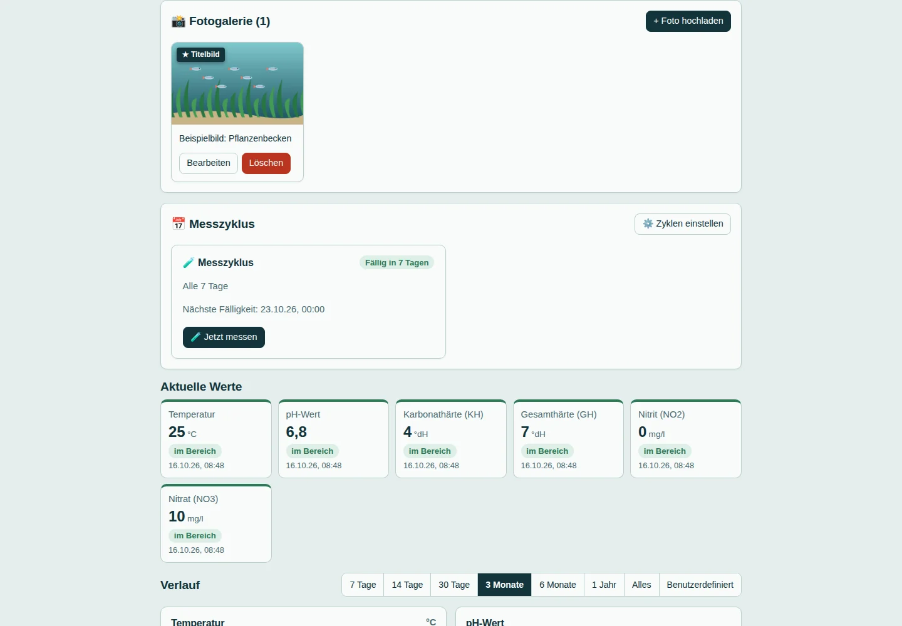
Step by step
- Choose “+ Upload photo” in the aquarium. PNG, JPG, WebP and GIF are supported up to the displayed five-megabyte limit.
- Choose your own image and add a caption. You can set it as the aquarium’s cover photo.
- Open a gallery image to view it at full size. You can change captions and the cover photo later.
- With sufficient permission, you can delete images you no longer need.
- Upload a resident portrait in the residents section. Change your own avatar in your profile.
Chapter 12
Import and export measurement data
CSV is a simple table format. Use it to transfer data or analyze it in a spreadsheet.
What you can do here
- Export
- Export downloads readings as a table. It is useful for your own analysis but does not contain all app data such as photos or accounts.
- Map columns
- During import, tell the app which column contains a date, reading or note. The preview shows how it understands the file.
- Check an import
- Check timestamps, units and decimal values before importing. Importing a file again can create additional records.

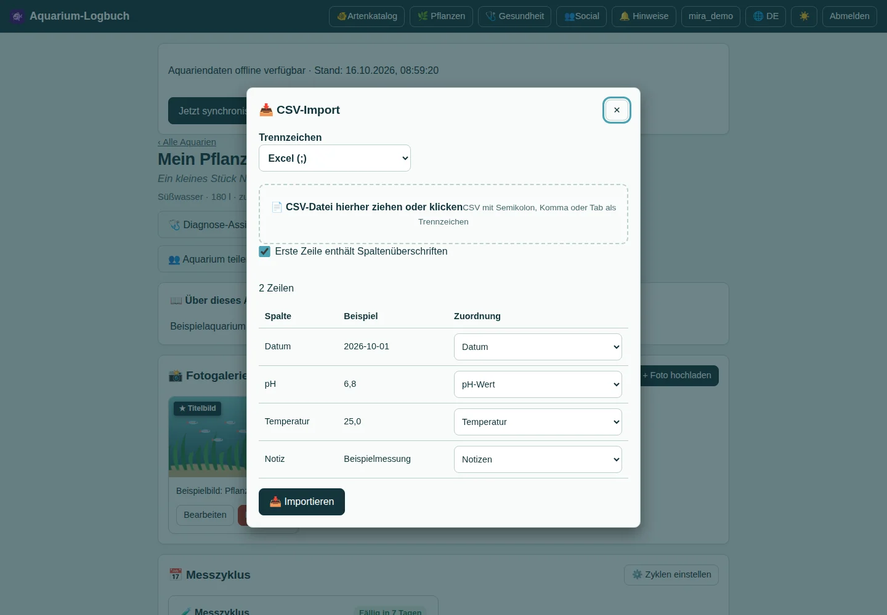
Step by step
- Choose “CSV export” in the aquarium to download measurements. The semicolon option works well with Excel; it creates a CSV file, not an XLSX file.
- Choose “CSV import” to bring in existing measurements. Upload a file or use the provided text field.
- Check the delimiter and whether the first row contains column headers.
- Map each required column to a field such as date, time, pH or note. Ignore columns you do not need.
- Review the preview before starting the import. Read any notices about invalid or skipped rows.
- After importing, check the history and table. Imported readings are assessed and may count toward test consumption.
Area 3
Animals, plants and forms
Use the catalogs, maintain stock and choose the actual form.
Chapter 13
Use the species catalog as a reference
You can look up a species without adding a new resident.
What you can do here
- Search and filter
- Search by name or trade name. Water type and category narrow the list when you do not yet know the exact name.
- Matching forms
- If your search matches a form, the shared card names it. You do not need to look for a separate card.
- Species details
- Details explain water requirements, tank size, social needs and behavior. Check the specific selection before adding it.

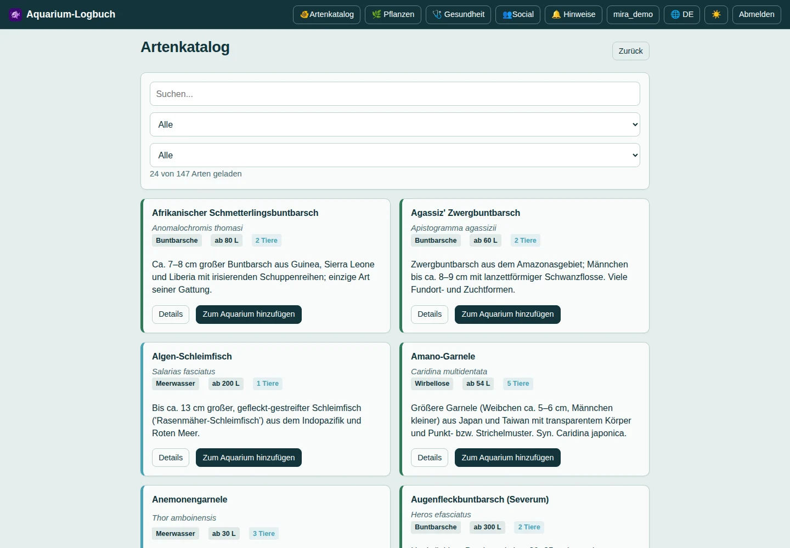
Step by step
- Open “Species catalog” in the header.
- Filter by water type and category, or search for a species, cultivar or trade name. Matching forms lead to one shared parent card. “Matching forms” lists their names directly on the card.
- Open a result. Read its water requirements, group guidance, minimum tank volume, care information and image credits.
- If appropriate, add the species to an aquarium from its details or open the linked health information.
Chapter 14
Animals and compatibility
Add animals through the species catalog whenever possible so their care requirements can be associated with them.
What you can do here
- Add from the catalog
- The catalog entry connects a resident to care information and the health area. The selected form receives its own stock entry.
- Group or individual animal
- The quantity represents a group. Individual names let you track animals separately, for example a pleco named “Goldie”.
- Compatibility and custom entries
- Hints compare known requirements. Custom entries may lack catalog information; no warning is not a guarantee of suitable care.

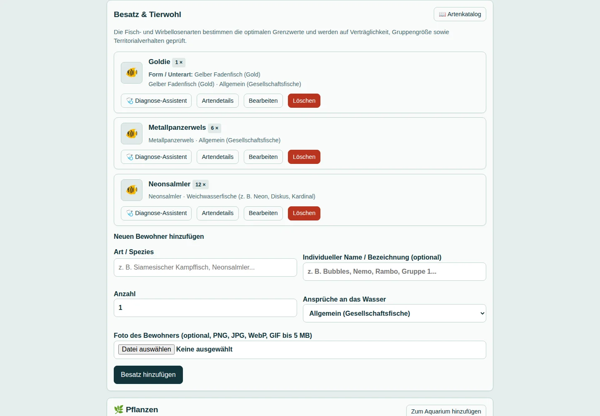
Step by step
- Open “Species catalog” and search for the species. Check its water type, tank volume and group requirements.
- Choose “Add to aquarium” from the parent entry. Select a documented form or variety in “Form / subspecies”, or leave it unspecified. Then enter the quantity; individual animals can have names. The Ancistrus card also offers documented L-numbers. “Separate species” and “Undescribed / unidentified species” are not subspecies; check their own parameters in the selection hint.
- In the aquarium, you can also add custom residents, change quantities and names, or upload a portrait. “Form / subspecies” identifies the selected form, including individually named animals and offline.
- For known species, “Species details” opens their information again. You can also start the diagnosis assistant from a resident.
- Read compatibility guidance on group size, tank size, behavior and requirements. Custom entries without a catalog match have less automatic information.
- Remove animals that are no longer in the tank so assessments and thresholds reflect the current stock.
Chapter 15
Choose cultivated forms, plant cultivars and L-numbers
A shared card can contain several selectable entries. A trade name or L-number is not automatically a scientific subspecies.
What you can do here
- Cultivated form or cultivar
- This is a selectively bred appearance, such as a particular color or leaf shape.
- Separate species
- Sharing a selection card does not make a separate species a subspecies of another.
- L-number and synonyms
- L-numbers identify particular loricariid catfish. Several numbers may find the same entry; not every L-number catfish belongs to Ancistrus.

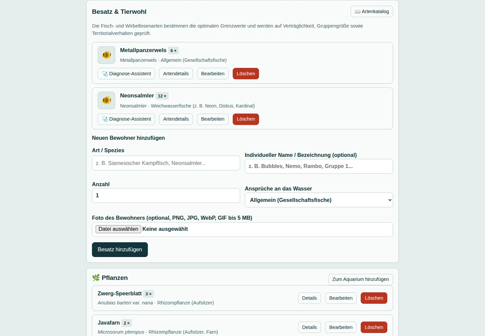
Step by step
- Search the appropriate catalog for a form, for example “Pangolino”, “Gold” or “L183”. The parent card identifies the matching entry.
- Open “Add to aquarium”. Choose the tank and then the form. For bristlenose catfish, the field is “Species / L-number / form”.
- Read the selection hint. Separate Ancistrus species have their own parameters; the shared card’s base parameters do not apply to every L-number.
- Enter the quantity and save. The tank keeps the actual selection visible, including for individually named animals.
- If identification is uncertain, do not invent a subspecies. Use the unspecified base entry or a suitable custom entry and clarify the identification.
Chapter 16
Find plants and add them to a tank
The plant catalog helps you find suitable plants and record the stock in your aquarium.
What you can do here
- Look up plants
- Details help with lighting, placement, growth and care. The catalog also includes labeled moss and algae entries.
- Choose a cultivar
- Cultivars such as Pangolino and Pinto appear under their shared card. Select one when adding; it remains identifiable in the tank.
- Change total quantity
- The quantity is the total stock of that plant in the tank. Changing three to five means five in total, not eight.

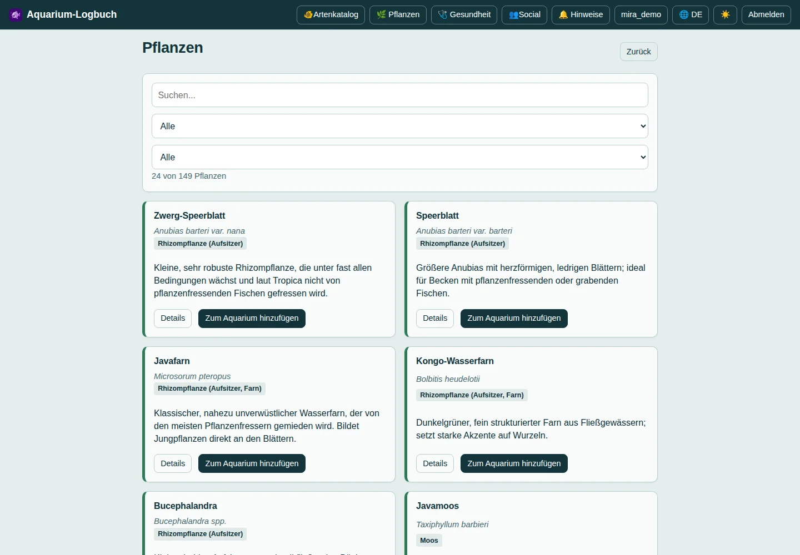
Step by step
- Open “Plants” in the header. Filter by water type or category, or search for a species or cultivar name. Forms appear under a shared parent card; “Matching forms” lists the forms found by your search.
- Open a plant and read its placement, lighting, growth and care guidance.
- Choose “Add to aquarium”, select a suitable aquarium and, if offered, the specific form in “Form / subspecies”. Enter the quantity and save. The selected form keeps its own stock entry. In the aquarium, “Form / subspecies” also identifies the selected form, including offline.
- In the aquarium’s plant section, you can change quantities or remove plants.
- To record trimming or planting in your history, add a separate logbook entry for that work.
Area 4
Health and AI
Look up signs, answer questions and use optional assistance.
Chapter 17
Diseases, diagnosis and treatments
The health section provides reference information and a question-based assistant. It cannot provide a definitive veterinary diagnosis.
What you can do here
- Disease catalog
- It explains typical signs, possible causes and further information. Search and filters help you find relevant entries.
- Diagnosis assistant
- The assistant asks questions and ranks possible causes. It does not examine the animal and cannot replace a professional diagnosis.
- Look up treatments
- Linked treatments and supplies provide further information. A match is not a recommendation to medicate immediately.

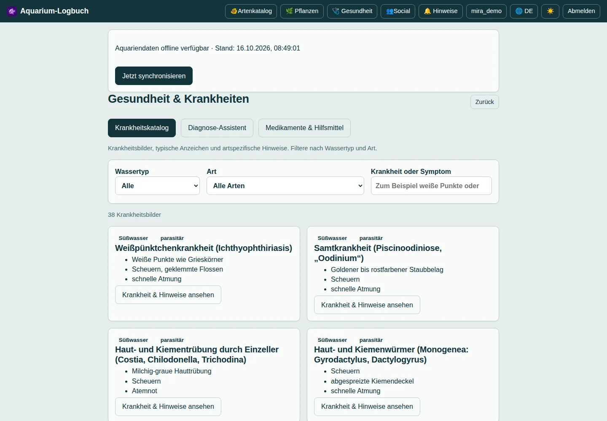
Step by step
- Open “Health”. Filter the disease catalog by water type, resident type or search term.
- Open an entry and read its symptoms, causes, guidance, sources and associated treatments.
- To use the diagnosis assistant, select its tab or launch it from an aquarium or resident.
- Choose the aquarium and resident. Answer the questions as accurately as possible. Relevant current water readings may inform the assessment.
- Read the list of possible conditions, the information it uses and the limits of the result. Seek professional help if you are unsure or symptoms are serious.
- Under “Medications & supplies”, search for products and read their details, warnings, sources and legal information.
Chapter 18
Start the diagnosis assistant
First choose the affected animal or group. This is preselected if you start from the residents section.
What you can do here
- Tank and resident
- The selection determines which animal and water type your answers refer to. Individual names and stored forms help identify it.
- Yes, no or unknown
- Answer only what you have observed. “Unknown” is better than a guess and is considered in the result.
- Interpret the result
- The list provides guidance. Consider recent readings, natural coloration, care conditions and behavior together.

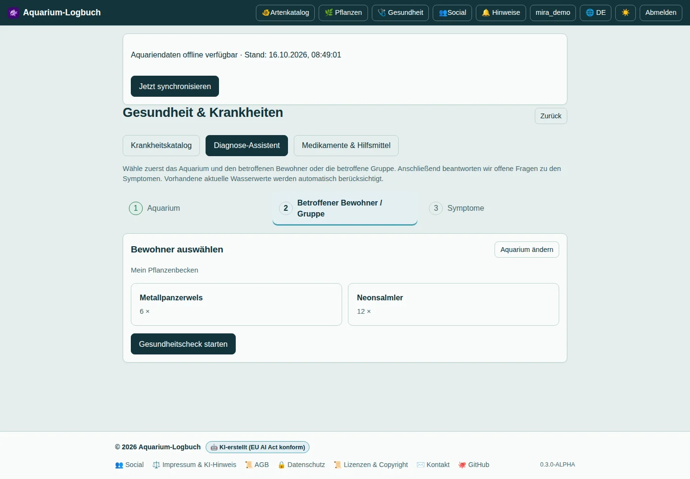
Step by step
- Check the aquarium and resident selection.
- Start the questionnaire and answer each question in turn.
- Review the result together with water readings, husbandry conditions and animal behavior. You can restart the assistant with updated information.
Chapter 19
Look up medications and supplies
This catalog supplements disease details. It does not replace professional advice.
What you can do here
- Medication or supply
- This area contains information about treatments and supportive measures. Read the details instead of deciding by product name alone.
- Warnings and other residents
- Consider fish, shrimp, snails and plants. The same treatment can have different suitability for different residents.
- Sources and use
- Sources show the basis of the information. Follow the instructions for the actual product and veterinary advice where appropriate.

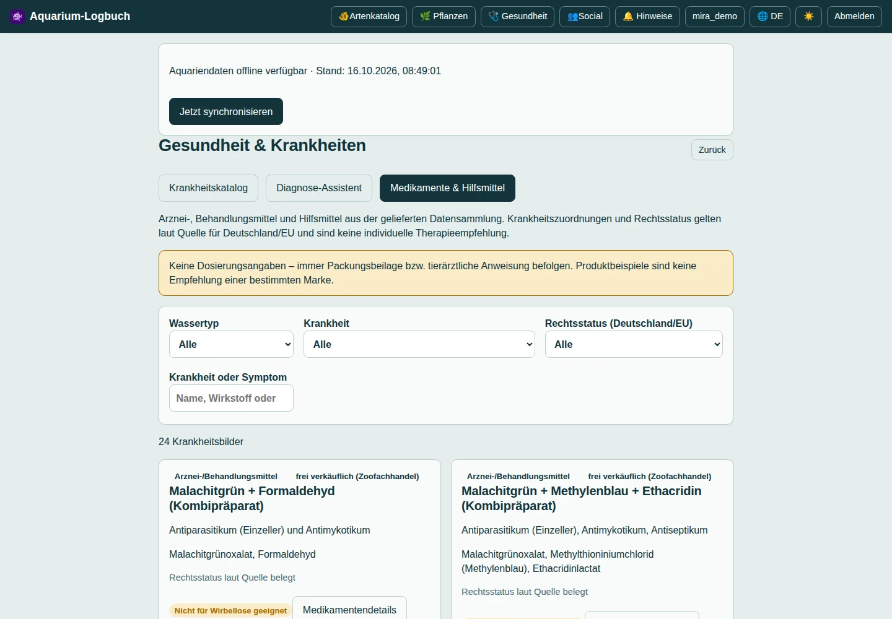
Step by step
- Open “Health”, then “Medications & supplies”.
- Search by name or narrow down the list using the available filters.
- Open the medication details. Pay particular attention to warnings, restrictions, sources and legal information.
- Consult a knowledgeable professional or veterinarian where needed; do not apply a treatment based solely on a search result.
Chapter 20
Set up the optional AI assistant
AI is optional. You can manage your aquariums without your own AI access.
What you can do here
- Provider, model and key
- The provider processes your request and the model answers it. An API key is your personal provider credential and should not appear in screenshots or posts.
- Test the connection
- The test checks the saved credentials. A successful connection does not guarantee the accuracy of later answers.
- Ask about a tank
- Quick questions or your own text start a request using the offered tank context. This needs internet and may incur provider charges.

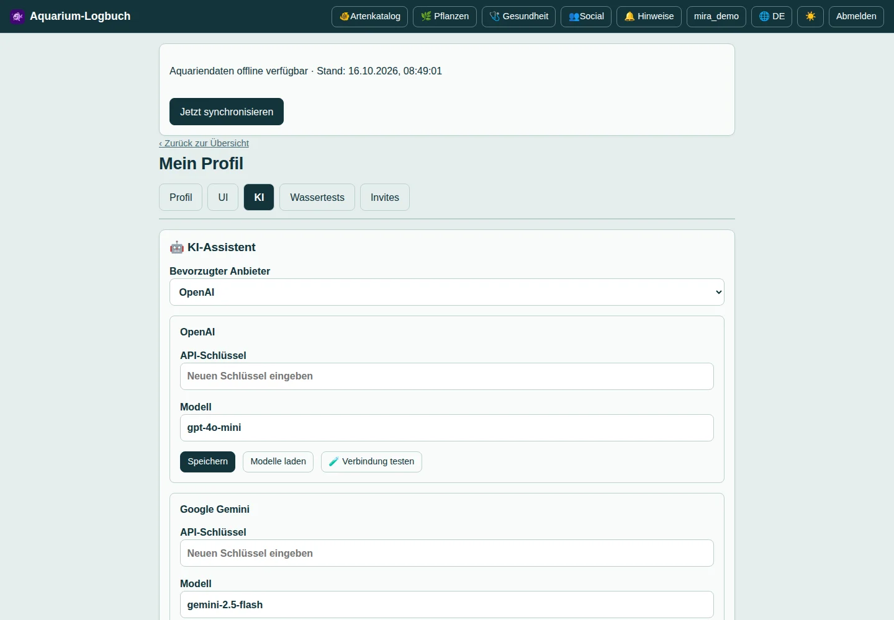
Step by step
- Open your profile using your username and select the AI tab.
- Choose an available provider, such as OpenAI, Google Gemini or Anthropic Claude. Enter your personal API key if the operator does not provide suitable access.
- Choose an available model and save the settings. Use the connection test to check the setup.
- In an aquarium, open the AI button once usable access is configured. Write a question or choose a quick question.
- The app shows its progress while processing a request. If an error occurs, you can edit the question and send it again.
- Remove personal keys you no longer need in your profile.
Area 5
Account, settings and tests
Manage access and appearance and keep track of test supplies.
Chapter 21
Profile, appearance and account security
Click your username in the header. Tabs separate personal details, appearance, AI, tests and invitations where available.
What you can do here
- Personal details
- Your name, bio and avatar describe your account. Your username also helps other users find you for sharing.
- Appearance and chart period
- Choose the language, design and initial chart period here. You can still change the period in an individual chart.
- Timer notifications
- Browser permission allows supported timer notifications. Sound settings, background rules and power saving can affect delivery.

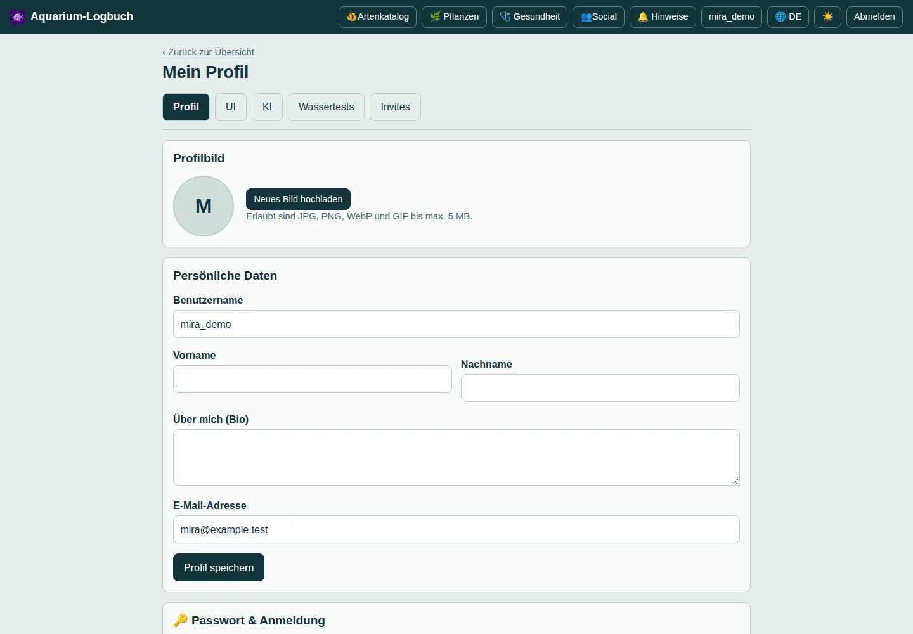
Step by step
- Edit the available personal details, bio and avatar in your profile. Save your changes.
- In the appearance section, choose your language, theme and default chart date range. You can also check supported notifications there.
- With a local account, you can change your password. Changing your email address may require confirmation again.
- If your operator has configured OpenID Connect, use the relevant section to link or unlink that sign-in method.
- If user invitations are enabled, create codes or email invitations and view their status in the invitations tab.
- Use “Sign out” in the header when finished, especially on shared devices.
Chapter 22
Forgotten password or sign-in changes
This chapter helps you regain account access. These actions require a reachable server.
What you can do here
- Reset password
- An email link lets you replace a forgotten local password.
- Verify email
- Verification belongs to your account address. You can request another verification email when needed.
- External sign-in
- Pocket ID or another configured provider manages a separate login; change that password at the provider.

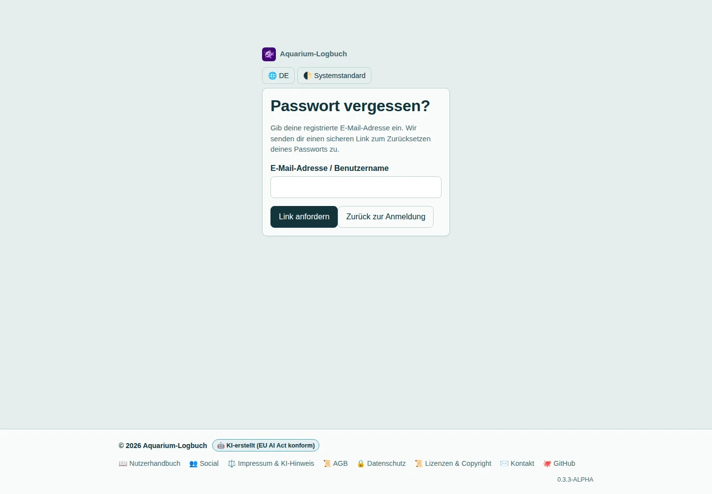
Step by step
- Choose “Forgot password?” on the sign-in page and enter your username or email address.
- Open the email and follow its link. Enter and repeat a new password, then sign in with it.
- If no email arrives, check spam and the address. Ask the operator if delivery is broken; for privacy, the message may not reveal whether an account exists.
- If already signed in, change your password under “Password & sign-in” in your profile. An existing local password is required as well.
- For external sign-in, check the OIDC link in your profile. Before unlinking, make sure another working sign-in method exists.
Chapter 23
Delete your own account
Account deletion is permanent. Save needed data and synchronize pending device actions first.
What you can do here
- Sign out
- Signing out ends the session; the account and its server data remain.
- Delete account
- This is a separate action with confirmation and effects on associated data.
- Save first
- Export readings you need or ask the operator about a suitable backup.
Step by step
- Open your profile and scroll to “Delete account” in the profile tab. Read the explanation.
- For local sign-in, enter the required password and deliberately confirm that you want to delete the account.
- Request the confirmation email. Until you complete deletion, the request is not a successful deletion.
- Open the email link and confirm deletion on the dedicated page. Follow the success message.
- If the email is missing or its link fails, contact the operator. Clearing browser data does not delete your server account.
Chapter 24
Select water tests and manage consumption
Test selection defines how you measure. Consumption tracking helps you plan refills.
What you can do here
- Test selection
- Store your preferred testing methods here. You can select individual methods or entire test suites.
- Variant and capacity
- Choose the package or refill variant. Capacity describes the expected number of tests available from that refill.
- Used and reset
- Enter already used reagent as the starting value. Reset only for a new refill; deleting readings does not refill the bottle.

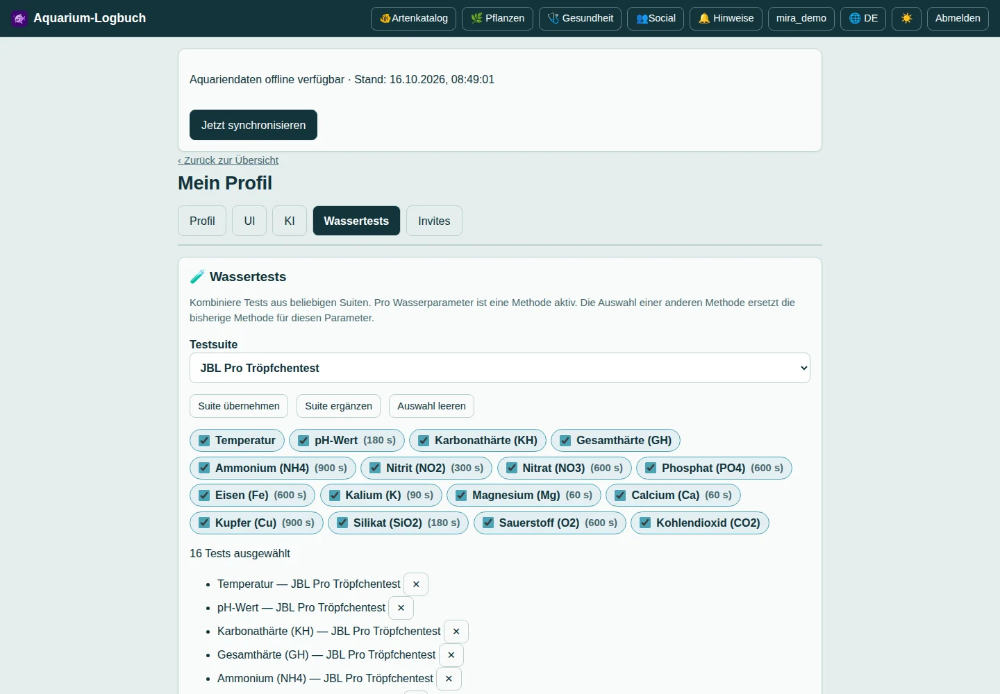
Step by step
- Open the water tests tab in your profile. Select the methods you use and save them.
- In the consumption section, select the correct test suite and, where applicable, the variant or refill size.
- Enter how much of your current bottle you have already used. Previous measurement history is not fully counted retroactively.
- New saved readings increase the corresponding consumption. Empty values do not count. Deleting a measurement does not restore used reagent.
- When adding a refill, reset that test’s counter. Adjust its capacity if it differs from the default.
- Enable refill reminders if needed. Email notifications require a confirmed address and configured email delivery.
Chapter 25
Refills and purchase reminders
Consumption counters help you plan your next purchase in time.
What you can do here
- Usage level
- The display estimates how many tests remain. It does not replace checking the actual fill level and expiry date.
- Restock reminder
- An enabled email reminder can be queued once per refill after 75 percent usage. It requires a verified address and working email delivery.
- New refill
- Resetting starts usage tracking for that refill again. Other tests and counters stay unchanged.

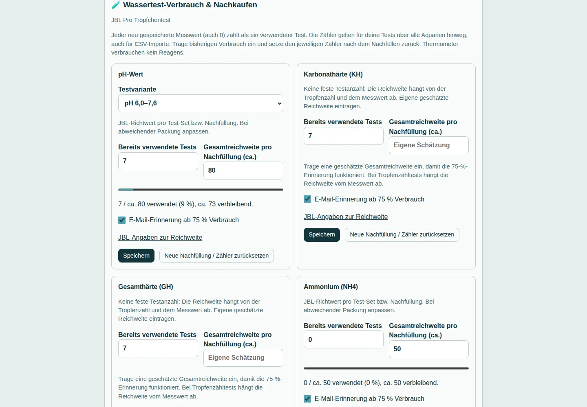
Step by step
- Open “Water tests” in your profile and scroll to “Water test usage & refills”.
- Select the correct suite and check each test’s variant, total capacity and amount already used.
- When starting a new bottle or refill, reset only the corresponding counter.
- Enable a purchase reminder if needed. At 75 percent consumption, an email may be queued once per refill if the address and mail delivery are ready.
Area 6
Sharing, Social and notifications
Work together and deliberately choose who can see your content.
Chapter 26
Share an aquarium with other people
Sharing an aquarium is different from publishing a Social post. An aquarium share is granted to a specific user account.
What you can do here
- Read access
- The person can view the shared tank. This does not give them ownership or administration rights.
- Write access
- The person can also maintain supported tank records. Only the owner manages sharing permissions.
- Invitation and removal
- A new share must be accepted. You can resend pending invitations or remove access later.

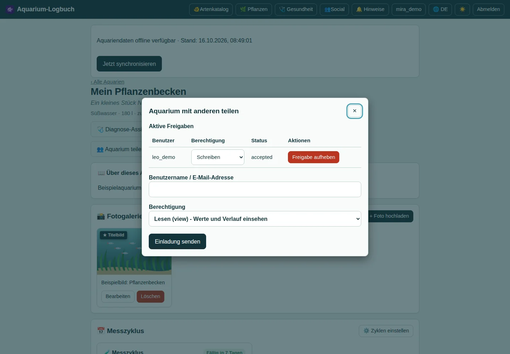
Step by step
- Open an aquarium you own and choose “Share aquarium”. Search for the other account’s username or email address.
- Choose “Read” if the person should only view the tank. “Write” also lets them maintain supported data.
- The invited person accepts the invitation. They can then find the tank under “Shared with me”.
- You can review existing shares, change roles or revoke access. Only the owner manages shares.
- Invitations and permission changes require a server connection.
Chapter 28
Notifications in one place
“Notifications” collects reactions to your posts and water-parameter warnings from aquariums you can access.
What you can do here
- Post reactions
- These notifications show likes and comments. Marking them read clears the unread status without deleting the post or comment.
- Water warnings
- A warning takes you to the affected tank. Check the reading and tank conditions before acknowledging it.
- Read does not mean resolved
- Acknowledging a warning does not change a reading. You still need to perform any necessary care or repeat test.

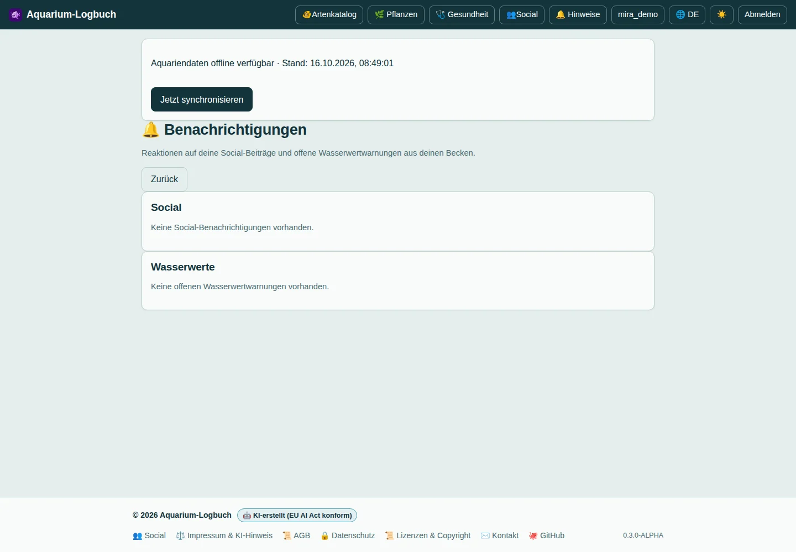
Step by step
- Open the notifications button in the header.
- Open the associated post or aquarium to review what happened.
- Mark Social notifications as read. With sufficient permission, you can acknowledge water-parameter warnings.
- Acknowledging records that you have seen the warning. It does not change the reading or fix the cause in your tank.
Chapter 29
Visibility, terms and contact
The page footer links to operator details, privacy information, terms and contact. This public guide can be read without an account.
What you can do here
- Private tank
- Access depends on the account and tank sharing permissions.
- Public post
- The content is intended for visitors without an account as well.
- Guide and contact
- The guide explains usage. The operator helps with access, email and this server’s setup.
Step by step
- Use the footer links for legal information, privacy, terms or contact, depending on what you need.
- Read the terms before registration. A new version can require signed-in users to consent again.
- Confirm only if you agree. If you do not want to continue, you can sign out from the consent dialog.
- Distinguish tank shares, server-only Social posts and public posts. Sharing a link does not automatically make private content public.
- For account or server questions, contact the listed operator. Do not send passwords, API keys or unsanitized backups.
Area 7
Mobile, offline use and updates
Keep working on the go, synchronize changes and apply updates.
Chapter 30
Work on your phone and without a connection
First open the app online and wait for automatic synchronization of your aquarium data to finish.
What you can do here
- On the home screen
- An installed web app opens like a separate application. Installing it alone does not download all tank data.
- Saved locally
- Local means on this device in the browser you are using. Other devices and server backups receive a change only after successful synchronization.
- Automatic synchronization
- With a reachable server, the open app synchronizes data. Offline, you can see the local data timestamp and try to synchronize manually.

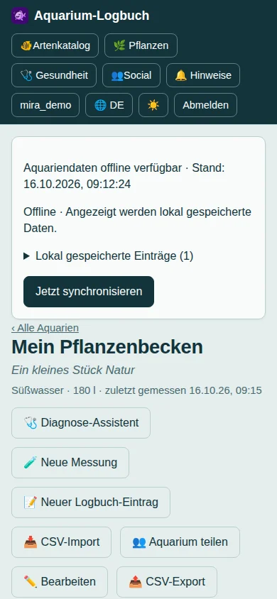
Step by step
- Use your app’s HTTPS address on your phone. An HTTP address on your home network is not sufficient for offline features.
- You can add the app to your home screen through the browser menu. Menu names differ between iPhone and Android.
- Wait for synchronization on your first online visit. Catalogs and images may take additional time.
- Without a connection, view synchronized aquariums and queue supported measurements, care entries and edits locally.
- When the server is unavailable, you see the local data timestamp, pending changes and “Synchronize now”. Reconnecting synchronizes automatically and hides the timestamp and button. Keep the app open for this.
- Before switching devices or deleting browser data, wait until no pending changes remain.
Chapter 31
Understand pending changes and conflicts
Changes recorded offline wait on this device. For open water tests, the app compares individual entries: additions and equal readings merge automatically. Conflicting changes require your choice.
What you can do here
- Pending
- The change is saved locally but has not been confirmed by the server.
- Conflict
- The same data changed since your starting point, so it is not simply overwritten.
- Discard or apply
- You decide what happens to the pending local action. That decision is not a backup.
- Merge individual readings
- The sync compares the starting point, your entry and the other device’s current version. You can decide for each conflicting field while retaining other readings. Changes to different parameters and equal numbers do not trigger unnecessary prompts.
Step by step
- Open the list of locally saved entries when synchronization is pending. Check which action is waiting.
- Reconnect and keep the app open. Offline, you can use “Synchronize now”.
- For a conflict, read the local and server versions. Decide which data is still correct.
- For water tests, choose “This device” or “Other device” only for the displayed differing fields and click “Apply selected values”. One-sided additions and equal numbers need no decision.
- “Apply local version” retries your change against the new starting point. Another conflict is possible if the record changes again.
- “Discard” removes the local action; dependent actions may also be removed. Independent entries stay separate.
- Before switching devices or clearing browser data, wait for synchronization to finish. For an error, also check current write permission.
Chapter 32
Online features when disconnected
Some features need the server, including Social, sharing, account security and AI. If it cannot be reached, a clear offline notice appears.
What you can do here
- Offline notice
- The notice means the request cannot reach the server. You can continue using local tank data that is already available.
- Check now
- This button retries the paused request. It is different from synchronizing tank actions already saved locally.
- Close
- Closing ends this attempt. It does not store the online request as a task for later.

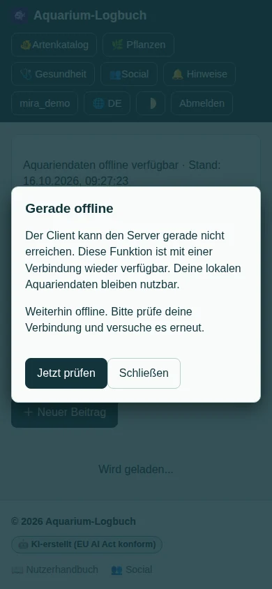
Step by step
- Check your Wi-Fi or mobile connection. Even with Wi-Fi connected, the app server may be unreachable.
- Tap “Check now”. The app retries the same request. Without a connection, the notice stays open; with a connection, the action continues.
- Use “Close” to cancel the request and continue using local aquarium data. Open the feature again later to start a new attempt.
- If the connection broke while saving, check whether the action already succeeded before retrying. Otherwise, repeating it could create duplicate changes.
Chapter 33
Updates without unexpected reloads
A new app version does not necessarily mean you need to reload the interface.
What you can do here
- New interface
- A prepared interface update can be activated with “Load now”. This reloads the tab, so save unfinished input first.
- Continue for now
- “Later” lets you continue in the open version. Once all previous tabs are closed, the browser can activate a waiting update normally.
- New catalog data
- Species, plant and health changes are loaded separately. These data changes do not need an interface update notice.

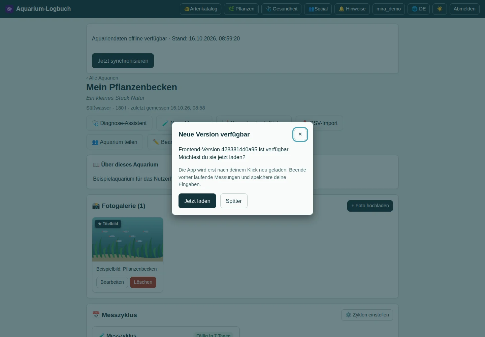
Step by step
- If frontend files change, “New version available” appears. Finish ongoing measurements and save your input.
- Wait for the update to be prepared if necessary. “Load now” activates the prepared build and reloads this tab.
- Choose “Later” to keep working. Another new build may be offered again.
- Changes only to species, plant or health data synchronize separately. They do not require a frontend update dialog.
- If an update fails, restore the connection and retry. Other open tabs may still use their previous build.
Area 8
For operators and administrators
Manage users, invitations, email, logs and backups.
Chapter 34
For operators: initial setup
On an empty installation, the setup assistant guides you through the first settings. Afterwards, manage the app in the admin area.
What you can do here
- First administrator account
- This account manages the new installation. Regular users do not need administrator access.
- Registration and email
- Registration mode determines who can create an account. Email delivery is needed for confirmations, invitations and reminders.
- Public address and backups
- Mobile and offline use need a suitable HTTPS address. Backups preserve the server state for a later emergency.

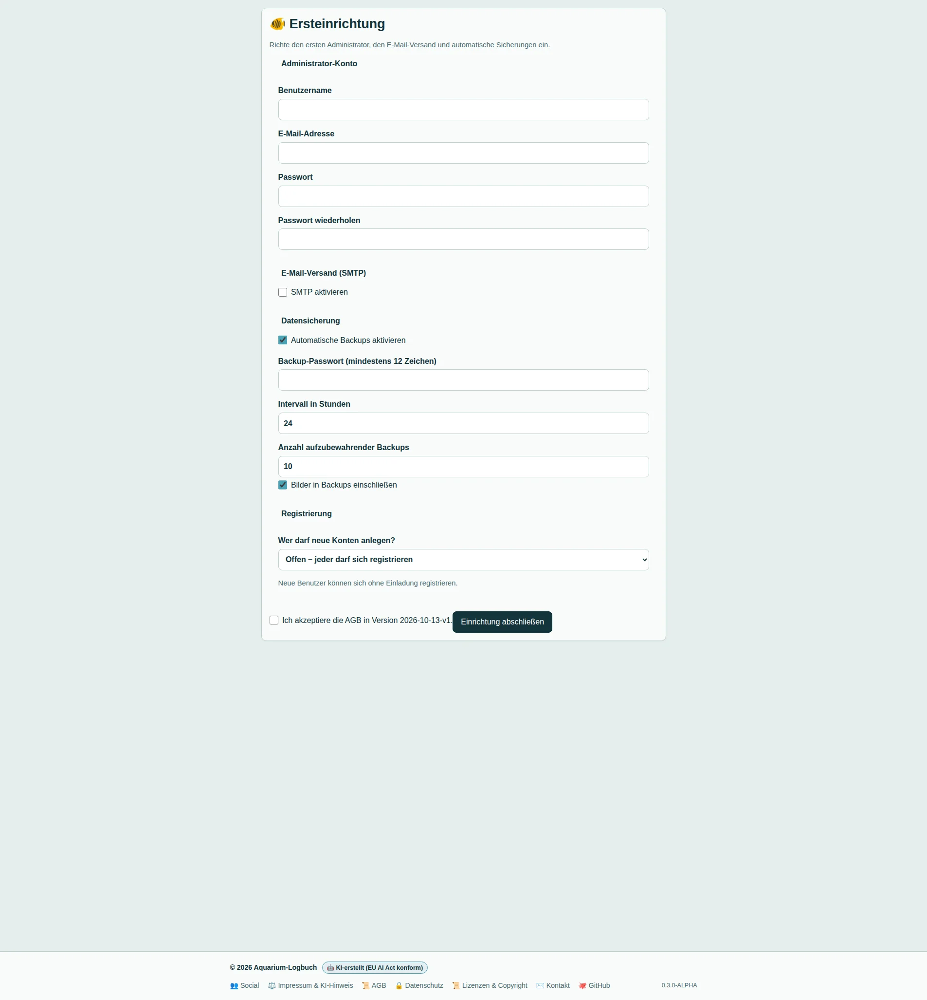
Step by step
- Open the new installation and create the first administrator account. Use a reachable email address and your own strong password.
- Choose who can register: anyone, invited people only or nobody. You can change this later.
- Configure SMTP for email delivery or leave it disabled for now. Without email delivery, confirmation messages, password resets and email reminders will not work reliably.
- Configure automatic backups if needed and keep the backup password safe.
- Complete setup. For public use, configure the correct public HTTPS address and reverse proxy if applicable.
Chapter 35
Manage users and administrator access
Only authorized administrator accounts can see the admin area. Regular users do not need it for aquarium care.
What you can do here
- Manage users
- You can find or create accounts and change the available account details. Check the affected person before each change.
- Administrator access
- Administrators can manage server-wide settings and users. This is broader than write access to one tank.
- Delete accounts
- Deleting a user can affect associated data. Read the confirmation and save any needed data first.

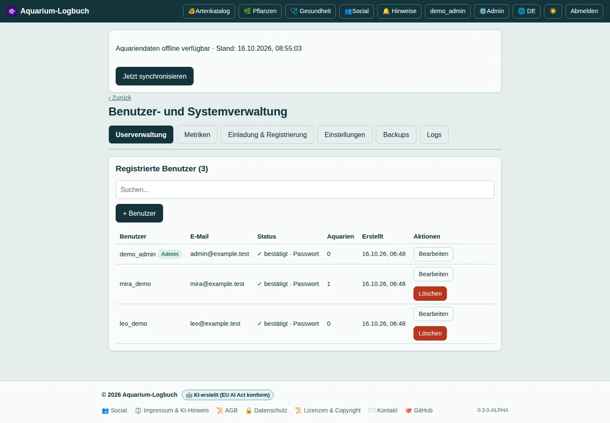
Step by step
- Open “Admin” and the user management tab. Search by username or email address.
- If needed, create an account using the available fields. Give each person their own account.
- To correct details, edit the right user. Check the address and email verification status before saving.
- Grant administrator access only to people who may manage users and server settings. A tank share is sufficient for working on one tank.
- Delete an account only after checking the consequences and confirmation. Save any needed data first.
Chapter 36
Administration: manage invitations
Registration and invitations control who can create an account on your server.
What you can do here
- Registration mode
- Open allows normal registration. Invitation modes require a valid code; closed prevents new registrations.
- Code or email
- A code can be passed to the intended person. An email invitation sends access through the configured mail server.
- Expiry and usage limit
- These settings limit how long and how often an invitation can be used. Revoking invalidates an invitation you no longer need.

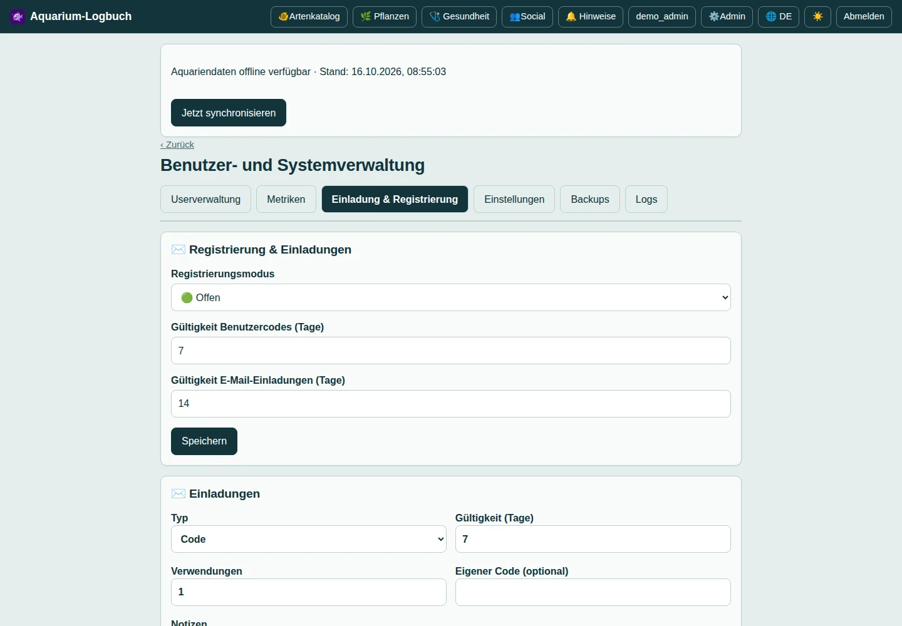
Step by step
- Open “Admin”, then “Invitations & registration”.
- Choose open registration, administrator invitations only, user invitations or closed registration. Check the effect before saving.
- Create a code or email invitation and set its expiration and usage limit.
- Share invitations only with the intended person and revoke invitations you no longer need.
Chapter 37
Administration: view metrics
This overview summarizes the available usage counts, such as users, aquariums and AI usage.
What you can do here
- Summary counts
- The overview shows aggregate operating figures such as accounts and tanks. It does not rate the quality of animal care.
- AI usage
- Requests and reported token counts provide a usage overview. They do not replace the provider’s billing information. Tokens are small pieces of text counted by an AI provider during processing.
- Additional lock
- The metrics password provides extra protection for this area. It is independent of your normal account password.

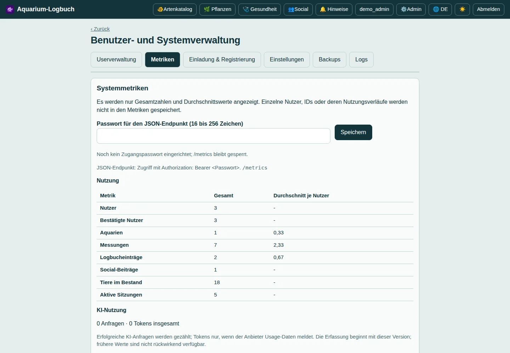
Step by step
- Open “Admin”, then “Metrics”.
- If needed, set up the separate metrics password or use it to unlock the view.
- Read the aggregated figures and available breakdowns. These are operational statistics, not assessments of your aquariums.
Chapter 38
Email delivery and operator details
These settings affect everyone using your installation.
What you can do here
- SMTP connection
- SMTP is how the app sends email. The mail provider supplies the host, port, encryption settings and credentials.
- Test email and queue
- A test email checks delivery. The queue shows pending or failed deliveries; it is not an inbox.
- Operator details
- Contact information and legal details apply to the whole installation. Check the public pages after saving changes.

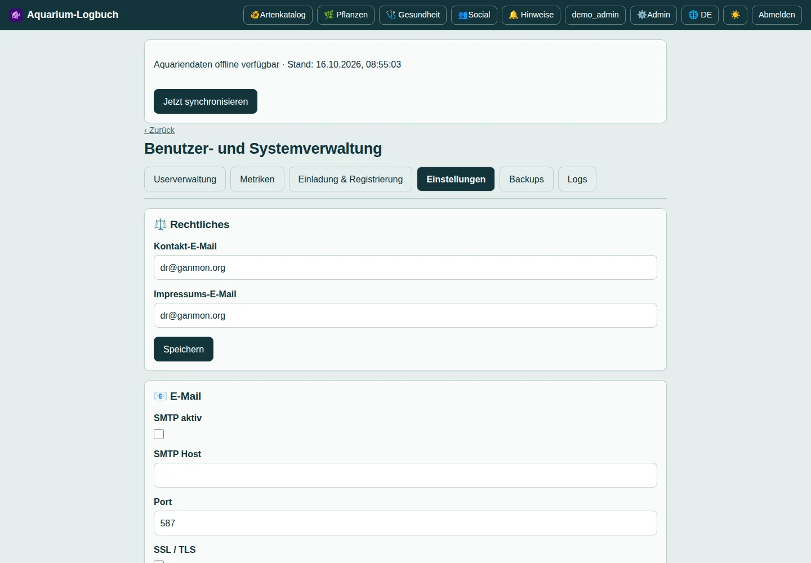
Step by step
- Open “Settings” in the admin area. Enter the SMTP server, port, encryption, credentials and sender address supplied by your email provider.
- Save and send a test email. Check that it arrives. If it fails, review credentials, encryption, spam folders and server logs.
- Check the mail queue when messages are delayed. Not every message is delivered immediately.
- Maintain the available operator, contact and legal details for your installation. Public pages are also linked in the footer.
- Under “Logs”, search messages and filter by severity. Older entries load progressively; review logs for personal data before sharing them.
Chapter 39
Administration: find errors in logs
System logs help you investigate technical problems.
What you can do here
- Filter messages
- Severity and search terms help locate relevant events. Warnings and errors can have causes other than incorrect user input.
- Compare timestamps
- Compare the log time with when the problem occurred. This helps connect an error to the relevant action.
- Share or clear logs
- Share only checked excerpts without personal data or credentials. Clearing removes diagnostic information and does not fix the cause.

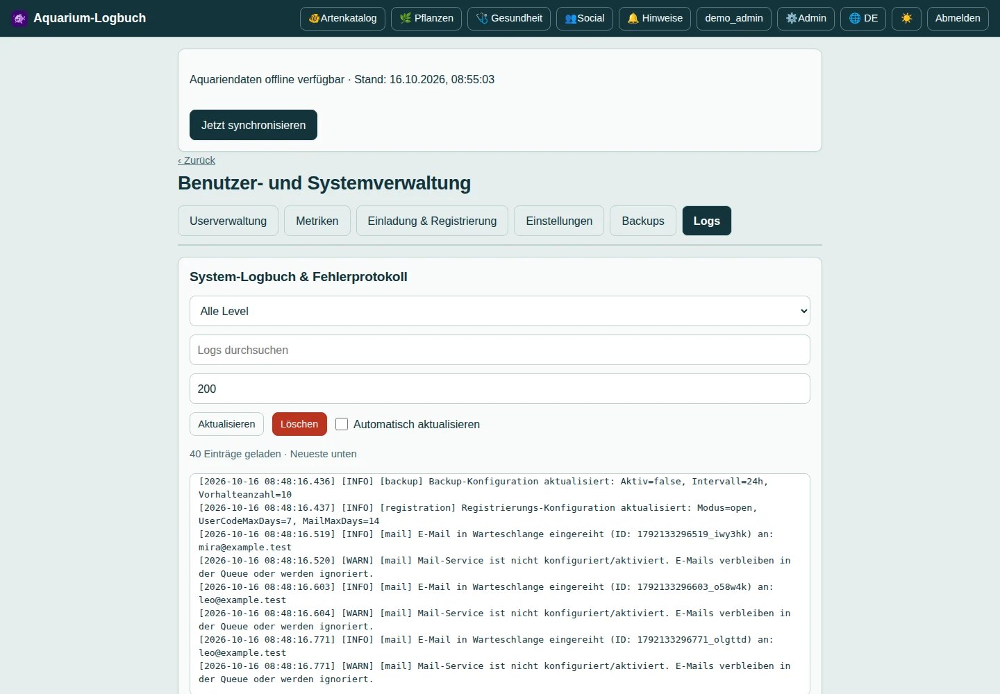
Step by step
- Open “Admin”, then “Logs”.
- If needed, choose a severity such as warning or error and enter a search term.
- Load older entries if the message you need is not yet visible.
- Read each message together with its timestamp and the action performed. Remove personal data and credentials before sharing an excerpt.
Chapter 40
Administration: back up and restore
Backups protect data already saved on the server. Pending offline actions on other devices are not included.
What you can do here
- Create a backup
- A backup contains the saved server state. Depending on the options, it includes images and encryption; pending device actions are absent until synchronized.
- Automatic backups and retention
- A schedule creates backups regularly. Retention determines which older backups are kept.
- Restore
- Restoring replaces the server data. Keep the password and server encryption key safe and stored separately.

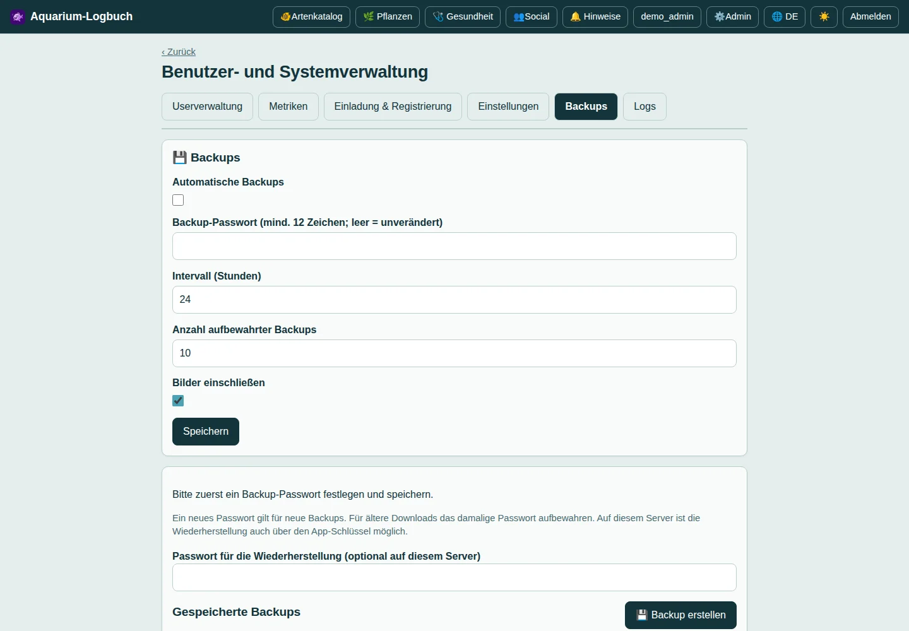
Step by step
- Open “Backups” in the admin area. Create a manual backup and choose the available image and encryption options.
- Download important backups and store them separately from the app server. Back up the server’s shared app encryption key separately as well.
- For automatic backups, set the interval, retention and available password and file options.
- Before restoring, all users should synchronize pending offline actions. Also create a current backup of the existing server state.
- Choose only a trusted backup and read the confirmation. Restoring replaces the server’s data; it does not simply append individual rows.
- After restoring, check sign-in, aquariums and images. Missing or incorrect keys and passwords can make encrypted data unreadable.
Area 9
Help with problems
Check common causes and ask for help with useful details.
Chapter 41
When something does not work
These checks often help without deleting any data.
What you can do here
- Permission or connection
- Missing permissions and an unreachable server are different problems. Read the message in the affected area first.
- Try again
- Reload a failed section or use “Check now”. Before sending again, check whether the action already arrived.
- Ask for help
- State the action, area and exact error. A sanitized screenshot helps; credentials should never be included.
Step by step
- A button is missing: check that you are signed in and own the aquarium or have write access. Some features must be enabled by the operator.
- A view does not load: check the connection and use “Retry” in that section. Do not delete browser data while offline actions are pending.
- An image or catalog is missing offline: open the app online and wait for synchronization to finish. Not every online feature works offline.
- An email is missing: check your spam folder and ask the operator to review SMTP, the queue and logs.
- A timer gives no notification: check notification permissions, volume and battery-saving mode. Keep the app visible for important reaction times.
- A local action remains pending: read the error or conflict, check your permission and deliberately choose whether to keep or discard the local version.
- You need support: note the affected section, action and exact error message. Redact personal information and never disclose passwords or API keys.
Chapter 27
Share photos, like and comment
Social has its own photo feed. Private gallery and resident photos are not published there automatically.
What you can do here
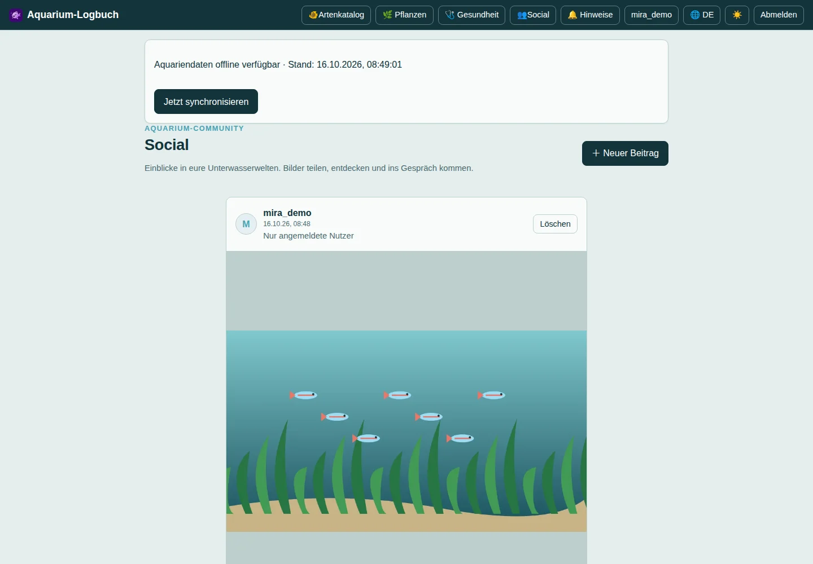
Step by step
- Open “Social”. Visitors who are not signed in see only public posts; signed-in users also see server-only posts.
- To create a post, choose an image and write a caption. Observe the displayed image and text limits.
- Check visibility before publishing. New posts are server-only by default. Enable “Show in public feed” only if visitors without an account should see the post.
- Use the heart to like a post or remove your like. Open comments to read them or add your own.
- “Share” opens your device’s sharing dialog or copies the post link. Internal links still require sign-in.
- You can delete your own posts and comments. Administrators can moderate content.
↑ Back to contents